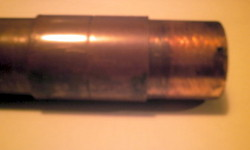

---
---
High Gain Collinear AIS (162MHz) Receiving Aerial
{% include_relative aishead.htmlf %}
{% include_relative navbar.htmlf %}
High Gain Collinear AIS (162MHz)
Receiving Aerial
by Neal Arundale - M1CHS
Background
Living by the sea and having an interest in both yachting and radio,
I became interested in AIS as soon as the inexpensive Nasa AIS
engine became available. I use the Nasa engine in conjunction with
Seaclear software when sailing offshore on friends Yachts, and the
SR162 with ShipPlotter at home. See Comparative
performance of Nasa, SR162 and Comar AIS-2-usb Over the last
year, I have been experimenting with different aerials to try
and improve my reception distance at home. See AIS Aerial Performance Comparisons
I would be interested in any comments,
Location
My home is in Scarborough, North Yorkshire, UK about ½ mile from the
sea and 250 feet above sea level facing the North Sea. I cannot
actually see the sea from my home as the line of sight is obscured
by houses, trees and the Castle headland. There are 400 feet cliffs
10 miles north and south. My aerial is currently located on top of
the flat roof of my garage, giving easy access to the aerial. At
some time in the future, I will probably locate the aerial on the
chimney stack but for the present it is more useful to be able to
gain access to the aerial easily and enables me to make a
comparative judgment as to the effectiveness of the ideas I have
been trying. I am fortunate in having daily ferries passing 30 miles
offshore, Hull 30 miles across land as well as a number of rigs
(normally having the same support vessels) 30+ miles offshore,and
two receivers which help to judge the aerials' performance.
Increasing Reception Range
AIS signals are transmitted at VHF frequencies, which like
terrestrial TV signals do not "bend" over the horizon. They are line
of sight, typically 20 miles at reasonable aerial heights. AIS
signals are very sensitive to any distortion, a bit like digital
terrestrial TV - the picture is good, very scrambled,
or nothing - there's no in between. Increasing the sensitivity
of the receiver by, for example, adding a aerial pre-amplifier
may make little or no difference to your ability to receive weak
signals. This is because the receiver will amplify the signal, noise
and distortion equally, so the information contained in the signal
still cannot be decoded by the receiver or computer.The way round
the problem is to improve the gain of the aerial and to reduce the
noise introduced into the receiver by the downlead. The gain of the
aerial is indicative of the amount by which the aerial will increase
the signal relative to the background noise, and is why a good
aerial is so important to the reception of weak signals. A shorter
downlead or using better quality cable will introduce less noise
into the receiver.
I have tried to give some idea of the range of the various aerials I
have tried and should be taken more as an indication of the relative
performance of one aerial compared with another. The actual
performance will depend on the aerials location and height, and, at
over the horizon distance, propagation
conditions are important, but can on occasions result in
reliable signals being received from over 100 miles away.
Click here for a chart of horizon
distance against aerial height.
Collinear Aerials
Aerials do not actually produce gain, they are more sensitive in a
given direction. It's like putting a lens in front of the light in a
light house, the light is concentrated in one direction, so at sea
level the light is bright (where you want it) and 20° above the
light will be much dimmer. Comparing with an aerial, the gain is the
amount the light is brighter, looking at the light in the direction
of the lens, than the light would be with no lens. A vertical
collinear aerial is equally sensitive 360° around the aerial in the
horizontal plane, but as the number of elements are increased,
the increasing sensitivity in the horizontal plane is matched
by a decrease in the sensitivity above and below the horizontal. By
using 50ohm coax for the active elements, there is no impedance
matching problem.
Mk1 plain wire
My first aerial was a plain wire attached to the end of the centre
conductor of a length of RG58 coax, hung from the inside of my
lounge window. This enabled me to receive AIS on the Nasa engine but
only up to a range of around 5 miles. The length of the wire aerial
proved to be very critical, the optimum appearing to be around 80
cms, this increased the range to around 10 miles.
Silva Marine VHF aerial
The results from this were to say the least disappointing, although
better than a plain wire, it was not much better, even though it was
mounted on my garage roof.
Amateur 2m aerial
This was a Diamond
F-22 collinear 144Mhz (amateur 2m band). At 3.2 meters
long was quite a large aerial. The aerial is tuned to 144Mhz whereas
AIS is 162Mhz, thus it was some 10% off its centre frequency .It was
a big improvement over the marine VHF aerial, more than doubling the
minimum range to around 20-25 miles.
Mk1 - 5 element Collinear
After researching the Internet (see references/links below), my
first home constructed collinear was a great success, with a range
of 25-30 miles. It was very simple to construct being basically a 3
meter length of wire which I hung from the gutter of the roof above
the flat roof of the garage.

RG213 coax was used for the feed as I already had a wire in place.
If you do not have any RG213, I would try using RG58, particularly
if the cable run is quite small. Do not use RG213 for the aerial.
Both coaxes are 50 ohm for matching purposes. 75 ohm TV or satellite
coax theoretically should not work well, but I haven't actually
tried it (if anyone wants to try you'll have to adjust the lengths
by the velocity factor of the cable you use).
Practice a joint or two first to ensure you get the length correct
after soldering
- Cut 4 lengths of RG58 coax 63.9 cms long
- Strip 7 mm down to the center conductor
- Strip a further 10 mm of outer cover
- Gradually twist the screen back to to cover, leaving 3
mm of screen exposed
- Carefully run solder round the 3mm of exposed braid to
bind the braid
- Cut back the dielectric to the centre conductor
leaving 1 mm exposed
- Tin the centre conductor with solder
- Match up the end with a similarly prepared end of the
next section of coax
- Cut back both centre conductors to just contact the
screen of the next section the dimensions should now be
as shown in the top line drawing. Most importantly the
total length of the coax braid should be 61.1cm -
this is the "active" length of each section of the
aerial.
- Solder both centre conductors to both other screens
- Connect all 4 sections of coax in the same manner
- Attach the feed wire in the same manner, you may wish
to add a connector on the feed wire.
- Solder a 46.3cm length of plain uninsulated copper
wire to the top end centre conductor
- Check the continuity from top rod to centre of aerial
plug also checking there is no short across the plug
- Wrap PVC insulating tape round the joints
- Insulate the end of the top wire from gutter, I used a
"chock block" connector and hooked it onto the
gutter using a wire coat hanger
|
|
I constructed the aerial in an hour or so, total cost about £2. I
also managed to hang it from the gutter using a long pole
Modification tried
Replacing the top ¼ wave top rod with ¼ wave shorted coax and ¼ wave
top rod. The reception distance was halved. Many marine
VHF aerials would appear to be constructed in a similar way as they
are designed to work with transmitters. They are often called DC
grounded as a resistance check will indicated a short between the
screen and the aerial.
Technical Drawing
Click the Image below for an enlarged
PDF version, kindly drawn by Broos Docter (Netherlands)
See here for further pictures and
reception details kindly supplied by Greg Kunkel, Long Island NY.
Mk2 - 9 element vertical collinear with ground plane
Self supporting 6 meters high, range 35-45 miles.
Can be constructed without the ground plane with reduced range
Unobtrusive to neighbours
The aerial fits cleanly inside the Sota 7 meter
fibreglass pole. This is tapered along its length and comes in seven
telescopic sections (like a transistor radio aerial).
- Construct 8 sections of RG58 coax the same manner as in
the Mk 1 aerial above up to step 7
- Slip a 2" (5 cm) sleeve over the coax RG58 cover to
strengthen the eventual joint. I used a length of sleeving
removed from standard TV aerial coax. This was a fairly tight
fit, but slipped on nicely when lubricated with a touch of
washing up liquid
- Continue with steps 8 to 10
- When all 8 sections are soldered together check the continuity
- Slip the sleeves over the joints
- Again check the continuity
- Hang the coax up and seal the sleeves onto the RG58 coax cover
with araldite at each end of the sleeve
- Leave the araldite overnight to dry
- When dry, again check the continuity. Mine was OK so I didn't
have to locate and fix a bad joint. I suspect if your
soldering is not up to scratch you'll probably have to
start again.
- Cut a length of about 1½ metres of RG213 coax
- Cut about 25mm of sleeve off one end the RG213 coax
- Unbraid the braid on the coax back to the sleeve. The coax
tail will be required if you fit the ground plane
- Obtain a 16M plastic cable gland from an electrical
wholesaler. It must be able to clamp the RG58 cable and allow the RG213 to enter
through the threaded side and
you must be able to tighten the nut from within the cup of the
cap. I had to file the nut down a fraction.
- File a slot in the threaded (bolt) part of the cable gland
just sufficient to slot the unbraided coax into when the RG213
coax is pushed through the bolt end of the gland towards the nut
end. I used a Dremel.
- Put all the cable gland except the nut onto the RG58 coax
before joining the RG58 & RG213 coaxes
- Obtain a copper or brass washer that will just fit over the
cable gland bolt
- Make a cup to hold the ground plane
- Cut a 46.3 cm (¼ wave) length of 28 mm copper tube for the
ground plane
- Obtain a plain (not "Yorkshire") 28mm copper joint sleeve,
file off the centre groove so that the sleeve will slide
right over the tube, and is a quite tight fit
- Cut a further 1 cm ring of the same tube
- Saw through the ring to split it open
- By filing the saw cut open and squeezing it together,
create an insert that just fits into to copper tube
- Push the insert half way into the tube to hold it
together and solder a 28mm copper or brass washer onto the
top of the insert. The washer will eventually hold the 16m
cable gland, so check you can fit the gland before you
solder it. You may need to enlarge the centre of the washer
after soldering.
When completed the cap should be a tight fit in the copper
tube
- This is how they assemble together
- Push the RG213 right into the cable gland (leaving the braid
tail through the slot), while allowing the nut and clamping
washer to tighten firmly on the RG58 coax. When satisfied, clamp
the cable gland firmly onto the RG58 coax by tightening the nut

- Push the copper/brass washer tightly down over the gland bolt
so that the plastic nut will tighten onto the washer and braid
- Put the plastic nut on and tighten up. The whole joint should
finish being mechanically & electrically sound, as well as
being waterproof from the top
- Solder the top rod on to the end of the RG85
- Put a 10mm offcut of RG58 sleeve over the top joint & fill
with araldite to strengthen the joint onto the cable
- Assemble the top and second section of the fibreglass pole.
Mark the overlap on the pole so that when the pole is
assembled you can accurately position the aerial alongside and
outside the pole in order to determine where the bottom joint of
the aerial will be in the pole
- Assemble the rest of the Sota pole,
position the aerial alongside and mark the outside of the pole
exactly where the copper/brass cup washer will be located when
inserted into the pole
- Position the sleeve on the outside of the tube (see section
17.2) to act as a stop preventing the copper tube going
further up the pole & kinking the aerial coax

- Put the copper tube over the RG213 and push into the
copper/brass cup
- Assemble the bottom two sections of the pole and mark on the
outside of the bottom section where the next section ends
- Assemble the whole of the pole and lay the aerial alongside
with the top of the aerial exactly where it will be when
inserted in the pole
- Move the sleeve on the outside of the copper tube to the
position where it will act as a stop when inserted into the
pole. This prevents the aerial being kinked inside the pole.
- Cut the RG213 so that when a connector is added the whole of
the connection will be within the bottom section of the pole
- Put on the N type jack
- Obtain a length of 25mm plastic electrical conduit, this will
just slide into the copper tube. This must be prevented from
going inside the copper tube as it is used to support the weight
of the copper tube. I obtained a conduit joining sleeve which
just slipped a couple of mm into the copper tube, and would slip
over the conduit. Note the RG213 socket must go pass through the
centre of this connector. Alternatively you could glue a washer
or sleeve onto the plastic conduit, as long as the socket will
pass through and it will fit inside the pole.
- Before you assemble the aerial into the fibre glass pole,
obtain 30 cm of 38 mm aluminum tube (TV aerial mounting
pole). This should slide about ½ way down the outside of the
bottom section of the pole. With a hack saw, make a longitudinal
cut through one side only of the tube, from top to bottom.
- Slide the tube over the bottom section of the pole to nearly
the bottom, prising the tube slightly open as required.
This is where the pole will be clamped in the aerial
mounting bracket. Note that as you tighten the mounting bracket
clamps this tube will fit the taper of the fibreglass pole
exactly
- Push the rubber centre bung out from the screw cap on the end
of the bottom section of the pole and replace it with a plastic
washer that just fits in the cap but will allow a N type plus
through the centre. The hole must not allow a 25 mm plastic
electric conduit pipe through. I manufactured the washer from an
old plastic bottle. It must support the weight of the copper
tube and RG213 cable.
- Cut the conduit at the correct length to just support the
copper tube to the mark on the pole, whilst the conduit itself
is supported be the end cap of the pole when it is screwed on
the bottom of the pole.
- Carefully assemble the whole aerial into the pole, starting
with the top section, slide each section down from the top. I
supported the cable at each pole joint with 15mm of foam cut
from central heating pipe lagging.
- When assembled clamp the pole into a TV aerial mounting
bracket round the aluminum tube.
Comments
The mechanics of the construction is how I made the aerial,
there are probably better and/or simpler ways of building
the aerial. Some of the references below may give you other
ideas. Note however the electrical dimensions must be
adhered to. PVC pipe (in place of fibreglass) may alter the
electrical dimensions, as it could affect the
velocity factor of the aerial. Glass fibre is OK, carbon
fibre is not. 18/11/08
a test with an antenna analyser indicated, when inserted
in either a PVC or fibreglass tube, the resonant
frequency was reduced by 2%. This is barely significant.
I was also conscious of rain dripping into the joints as it
would run down the pole, and if inside the pole, down the
coax cable as well. This is why the bottom of the pole was
not sealed, as it would help any moisture or condensation
within the pole to dissipate.
The aerial has been subject to a 60 mph gale with no
problems.
The ground plane appears to increase the range by about 20%,
and also appears to reduce ships being "lost" under the high
(400 feet) cliffs around Flamborough Head.
|
|
See here for further pictures and
reception details kindly supplied by Jean Pierre, Perpignan, France.
Futher modification (January 08)
I wasn't totally happy with the way
the aerial wire hung down the Sota pole as
it tended to kink and really needed suspending from the top
while still supporting the weight of the copper tube from the
bottom.
I replaced the top 1/2 inch of the
top copper rod with a small (probably 8ba) screwed rod (again
1/2 inch), made from a brass bolt with the head chopped off, by
soldering the screwed section to the top of the copper rod. It
must be small enough to protrude through the fibreglass pole
(see below).
I cut down the top section of the
Sota pole so that the top 1/4 inch of the screwed rod just
projected through the fibreglass at the top of the pole when the
whole aerial was re-assembled.
I found a small plastic cup that
just (and only just) slipped over the top of the top section of
the fibreglass. Something like the top of a biro would do only a
bit smaller - I actually used a hypodermic needle cover !!
I carefully araldited a couple of
brass nuts into the plastic cup with a similar bolt in place
(until the araldite was set) in such a way that I could use the
cup to hold the top rod + the weight of the coax at the top of
the pole.
In this manner I could dissemble
the aerial from the pole at a later date if required, adjust the
length to just prevent the coax kinking, and maintain a
waterproof cover over the top of the pole.
Equipment & Software
I use a Smart
Radio SR162 dual channel receiver at home, purchased
direct from Smart at $460 including air freight. Delivery took 5
days. I also have a Nasa AIS
engine. This enables me to compare the relative performance of both
the aerials and the receivers. The sensitivity and response of both
receivers can be judged from the comparison here. Notice the Smart monitors both
AIS channels simultaneously, whereas the Nasa switches between the
channels.
At home I use the ShipPlotter software because it makes it simple to
download data to other servers. When sailing I use the Nasa engine
with the SeaClear software because SeaClear has much better chart
management and displays NMEA info alongside the chart.
The ShipPlotter software will accept decoded NMEA input as well as
raw audio. Both receivers output decoded NMEA . I put a discriminator tap
on the IC inside the Nasa engine to see if the ShipPlotter program
would make a better job of decoding the audio signal than the Nasa
engine. It made no difference.
Comparison
data
on graph (September 08)
I'm using a coaxial
relay to switch the aerials under control of the same PC running
Shipplotter and plotting the graphs. It is synchronised to plot
message rate (1) or (2) on the graph as the aerial is switched.
Every alternate message rate is therefore recorded for a different
aerial. The two aerials are located at the same height about 10
feet apart, using the same type and length of downlead and feeding
the same AIS receiver.
Calculations
v=fλ
where v=velocity, f=frequency and λ=wavelength
In our case we want wavelength so λ= v/f
V is the velocity of propagation which is the speed of light in free
space
AIS frequencies are 161.975 MHz and 162.025 MHz
One wavelength λ in free space is 300/162 = 1.852 metres = 185.2 cm
Velocity Factor
for RG58U coax is 0.66
One wavelength λ in RG58U coax is 185.2 x 0.66 = 122.2 cm
| Element |
Length |
Velocity factor |
Size |
| Top Rod |
¼ wave |
1 |
46.3 cm |
| Middle Coax |
½ wave |
0.66 |
61.1 cm |
Cutting Length of each coax section
| Braid |
61.1 cm |
| Dielectric |
0.1 x 2 = 0.2 cm |
| Center Conductor |
1.3 x 2 = 2.6 cm |
| Total |
63.9 cm |
Approximate Total Length of Aerial
Top rod + number of coax sections x (length of braid of each section
+ 1mm joining allowance)
| Elements |
Length |
Gain |
| 3 |
168.7 cm |
3db |
| 5 |
291.1 cm |
6db |
| 9 |
536.0 cm |
9db |
References